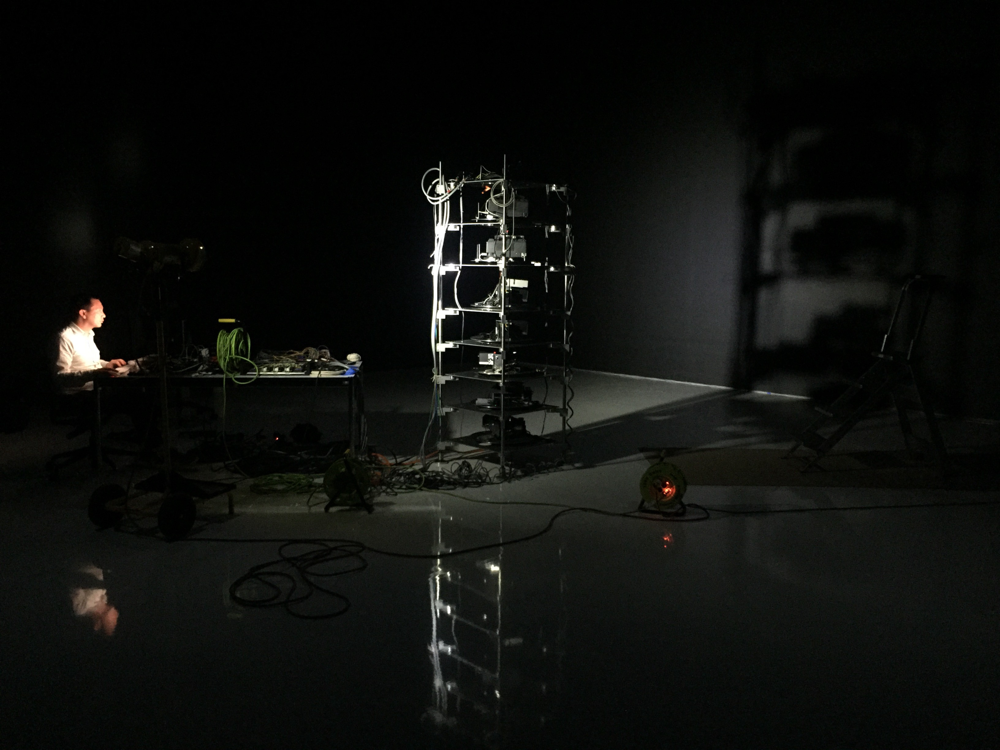
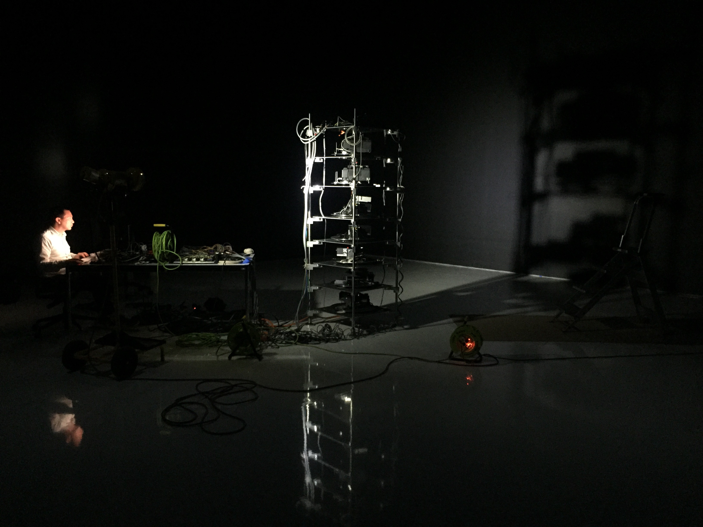

Conserving Digital Art: Recent Projects
Conserving Digital Art: Recent Projects
Conserving Digital Art: Recent Projects
Conserving Digital Art: Recent Projects
 


News, Hans Haacke 1969/2008/2018


Artistic Collaborations with Lynn Hershman Leeson
Agent Ruby, Lynn Hershman Leeson 1997

Agent Ruby, Lynn Hershman Leeson 1997
The Infinity Engine, Lynn Hershman Leeson 2015

The Infinity Engine, Lynn Hershman Leeson 2015
Venus of the Anthropocene, Lynn Hershman Leeson 2016
Shadow Stalker, Lynn Hershman Leeson 2019
Predictive Engineering, Julia Scher
Predictive Engineering (1993)
Predictive Engineering², 1997
Predictive Engineering², 1997

Predictive Engineering3, 2016
Predictive Engineering3, 2016
Predictive Engineering3, 2016